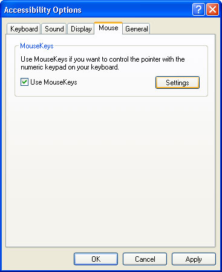
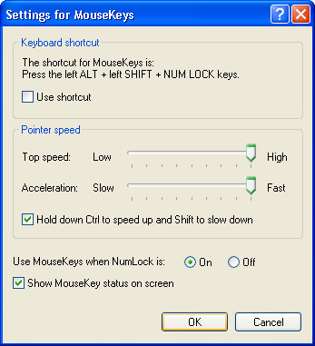

Free
computer Tutorials
|
Free
computer Tutorials
|
|
 home home |
Stay at Home and Learn | ||||
|
Control the Mouse with the Keyboard in Windows XP
This tutorial assumes that you have set the Control panel to Classic View. To see how to do this, click this link (opens in a new window): Set the Control Panel to Classic View To move your cursor around the screen, you use the mouse, of course. But if using the mouse is difficult, impossible, or just plain painful, then why not control the mouse with your keyboard keys instead? To set this up, do the following:
 Put a tick in the box where it says "Use MouseKeys", and then click the Settings button. You'll see the following screen:  You can set the pointer speed to how fast you want it to move when the numeric keys on your keyboard are pressed (these are the ones on right of the keyboard. Look out for NumLock. In the image above, we can only use MouseKeys when this is on). We've set the mouse pointer speed to High, and Fast. Click Ok on all the screens, and test it out. With the NumLock on, press the Up (number 8), Down (number 2), Left (number 4) and Right (number 6) arrow keys. You should see your mouse move around the screen If you want to access a menu, move the mouse pointer up to the menu item you want. Then press the big 0 key on the numeric key pad. The menu should display. You can then use the normal arrow keys to highlight things from the menu. Press the Enter key to select a menu item, and to bring up dialogue boxes. You can use the Tab key on the keyboard to move around dialogue boxes. The normal arrow keys and the enter key are used to select things from the dialogue box. If MouseKeys is active, you may see its icon in the bottom right, near
the clock (the icon on the far left, in the image below): The MouseKeys option can be very handy, if using the mouse is difficult. You should still be able to use a computer, if you can't use a mouse!
<--Back One Page Move on to the Next Part--> |
|||||
|